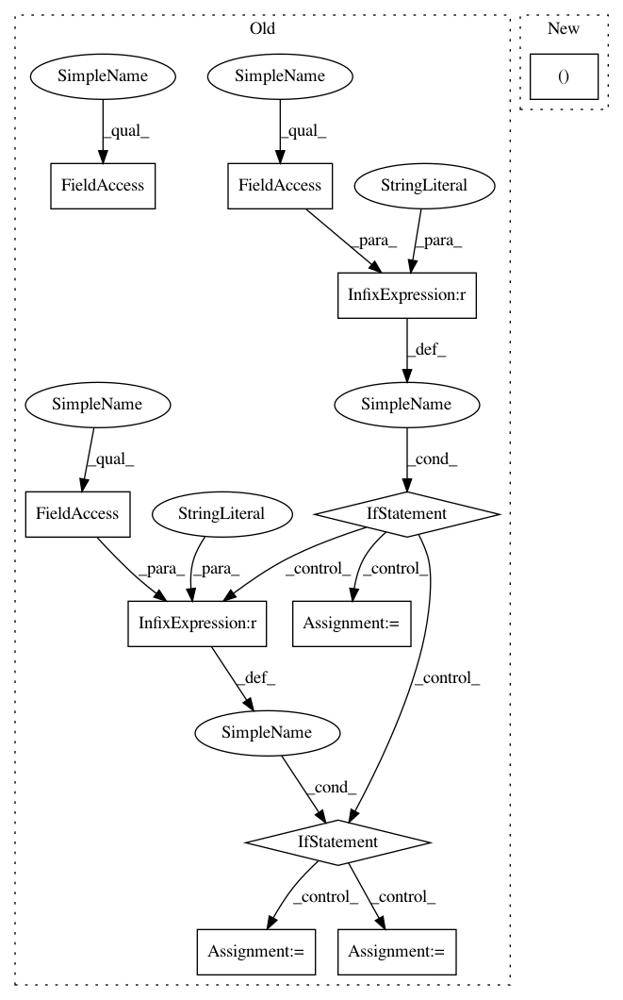

0185202735a78a01646560537638e0e29f5b0d52,onmt/trainer.py,Trainer,validate,#Trainer#Any#,211
Before Change
stats = onmt.utils.Statistics()
for batch in valid_iter:
src = inputters.make_features(batch, "src", self.data_type)
if self.data_type == "text":
_, src_lengths = batch.src
elif self.data_type == "audio":
src_lengths = batch.src_lengths
else:
src_lengths = None
tgt = inputters.make_features(batch, "tgt")
// F-prop through the model.
outputs, attns = self.model(src, tgt, src_lengths)
After Change
for batch in valid_iter:
src, src_lengths = inputters.make_features(batch, "src")
tgt, _ = inputters.make_features(batch, "tgt")
// F-prop through the model.
outputs, attns = self.model(src, tgt, src_lengths)
In pattern: SUPERPATTERN
Frequency: 3
Non-data size: 11
Instances
Project Name: OpenNMT/OpenNMT-py
Commit Name: 0185202735a78a01646560537638e0e29f5b0d52
Time: 2019-01-21
Author: benzurdopeters@gmail.com
File Name: onmt/trainer.py
Class Name: Trainer
Method Name: validate
Project Name: OpenNMT/OpenNMT-py
Commit Name: 0185202735a78a01646560537638e0e29f5b0d52
Time: 2019-01-21
Author: benzurdopeters@gmail.com
File Name: onmt/trainer.py
Class Name: Trainer
Method Name: _gradient_accumulation
Project Name: OpenNMT/OpenNMT-py
Commit Name: 0185202735a78a01646560537638e0e29f5b0d52
Time: 2019-01-21
Author: benzurdopeters@gmail.com
File Name: onmt/trainer.py
Class Name: Trainer
Method Name: validate
Project Name: keras-team/autokeras
Commit Name: a71e59578a0ba78b81b40678ddd99e53edfc5fce
Time: 2019-01-03
Author: song_3134@tamu.edu
File Name: autokeras/tabular/tabular_supervised.py
Class Name:
Method Name: search